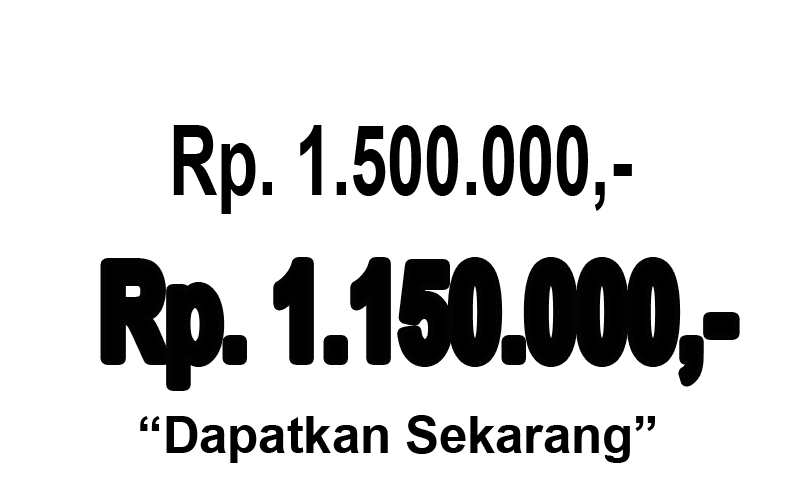
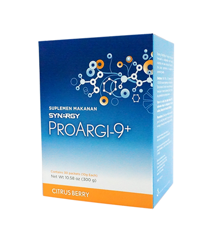
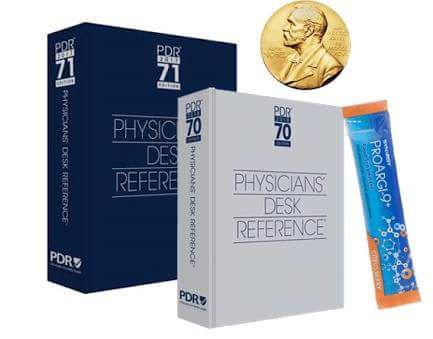

ini yang disebut-sebut benih timbulnya berbagai macam penyakit ini ternyata berada di
sekitar
kamu sehari-hari. Radikal bebas adalah hasil sampingan dari proses pengolahan makanan
menjadi energi. Selain itu juga bisa mendapat radikal bebas dari makanan, udara, bahkan
dari
reaksi tubuh terhadap sinar matahari. Nah, tubuh kita memiliki mekanisme pertahanan
khusus
untuk menangkal efek buruk radikal bebas. Yaitu Antioksidan.
Apa Faktor Penyebab Dari Radikal Bebas?
STRES OKSIDATIF
menjadi faktor utama penyebab inflamasi, seperti sindrom gangguan pernapasan pada orang dewasa,
artritis, penyakit iskemik (stroke dan sakit jantung), tekanan darah tinggi, preeklamsia, Alzheimer,
dan banyak penyakit lain.
PAPARAN SINAR MATAHARI
berlebihan dapat menyebabkan kerusakan oksidatif pada sel-sel kulit. Sementara radikal bebas dapat
menyerang organ dalam, seperti radikal bebas pada rokok yang menyerang sel paru-paru.
KANKER DAN ATEROSKLEROSIS
penyempitan pembuluh darah adalah dua pembunuh utama yang dikaitkan dengan serangan radikal bebas.
PENELITIAN
menemukan bahwa radikal bebas menyebabkan kerusakan sel yang erat hubungannya dengan penuaan.
ProArgi 9 Plus terbuat dari bahan alami dan sudah terbukti klinis mampu menangani berbagai
penyakit
kardiovaskular seperti jantung, hipertensi, kolesterol, dan lain sebagainya.
mengandung L-arginin yang manfaatnya sudah banyak dikenal dalam dunia kesehatan untuk memperbaiki
sirkulasi
darah, mengurangi kekentalan darah, dan mengurangi tekanan darah secara signifikan.
L-arginin juga merupakan sumber utama pembentukan Nitric Oxide dalam tubuh. Nitric Oxide berfungsi
untuk
melebarkan saluran pembuluh darah sehingga meningkatkan aliran darah dan menghilangkan plak pada
dinding pembuluh darah. Hal ini dapat membantu menurunkan tekanan darah tinggi.


"Optimalkan Hidup Anda dengan tubuh yang Sehat"
Kandungan Apa Saja Yang Ada Dalam Proargy 9
Plus?
Melalui Proses Yang Melibatkan Enzim Nitric Oxide Synthase , Itu Diubah Menjadi Nitrogen
Monoksida
Di
Lapisan Terdalam Arteri Yang Disebut Layer Endothelium. Then, Nitrogen Monoxid Expels
Blood
Flow
And
Supports Heart Health Through Dilation And Relaxation Of Arterial Walls.
Dimetabolisme untuk menghasilkan lebih banyak L-Arginin dan Nitrogen Monoksida. dan
membantu
mempertahankan content Nitrogen Monoksida yang optimal in a longer period of time.
Sebuah kuat antioksidan yang ditemukan dalam kulit anggur merah . Bahan penting ini
membantu
memberikan
perlindungan terhadap kerusakan pada arteri dan mengurangi oksidasi LDL dalam tubuh.
Meminta Fungsi Kesehatan Jantung dan Respons Terhadap Peradangan. Untuk Berabad-abad,
vitamin
ini
telah
dikenal luas akan manfaatnya bagi sistem kerangka tubuh dan perannya dalam penyerapan
kalsium.
Sekarang
Kami Memahami Bahwa Ini Juga Memainkan Peran Penting Dalam Membantu Menjaga Keseluruhan
Integritas
Sistem Kardiometabolik.

Manfaat konsumsi ProArgi-9 Plus
✔ Mendukung kesehatan kardiovaskular
✔ Membantu meningkatkan aliran darah
✔ Membantu memerangi efek negatif dari penuaan dini kardiovaskular
✔ Dengan pemanis Xylitol untuk meningkatkan kesehatan mulut
✔ membantu mengurangi lemak tubuh
✔ Memiliki manfaat anti-penuaan
✔ Membantu menjaga kadar gula darah yang berada dalam batas normal
✔ Membantu meningkatkan energi
Proargi9-plus (Minuman Anti Penuaan)
Bagaimana Jika Anda Bisa Memprogram Kulit Anda Untuk Mempertahankan Kilau Alami? Mengurangi Keriput
Dan Kerutan , Meningkatkan Kecerahan Dan Mengembalikan Anda Kemilau Kulit Dan Menghaluskan Permukaan
Kulit Anda
Untuk informasi Lebih Lanjut Silahkan Menghubungi Kami Melalui Whatspp